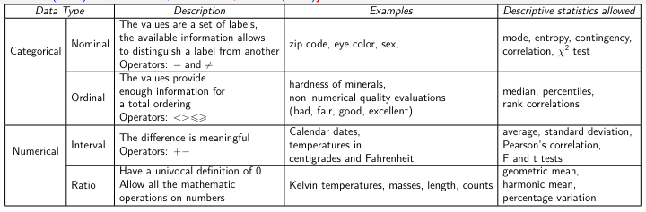

Type
We will not talk about common data types relative to the classical computer science meaning (integers, strings, ...) but only about meta-data types useful to describe the data classification we need in a machine learning procedure. We can split our data in two categories:
- Categorical: non necessarely number data that gives us a limited amount of operators to use on them. They are normaly discrete or binary. Categorical data types are: nominal , ordinal .
- Numerical: numerical data that allow us to use a full set of operator to perform statistics or operation on them. They are normaly continuous. Numerical data types are: interval , ratio .
Summary: 